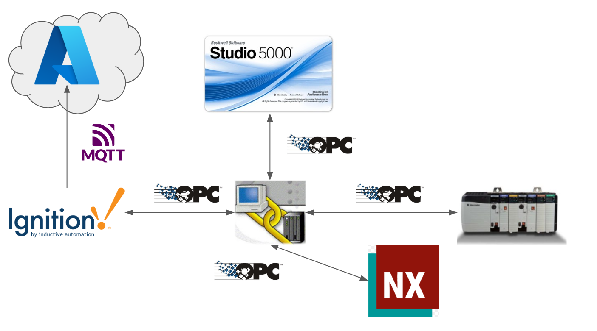
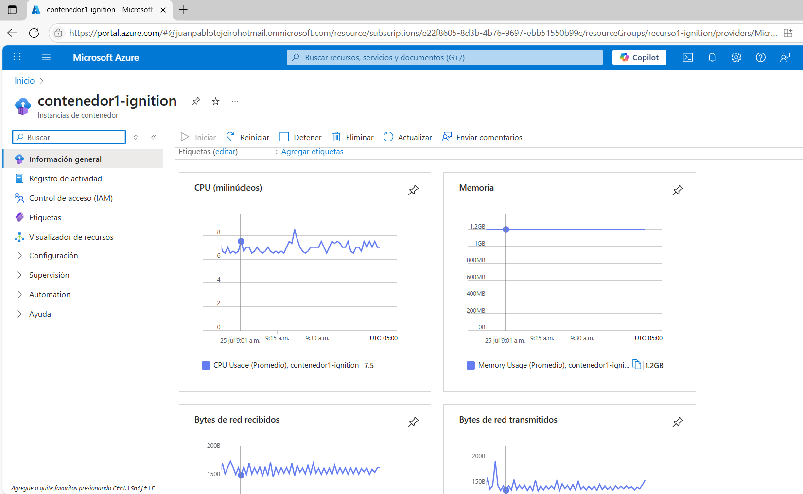
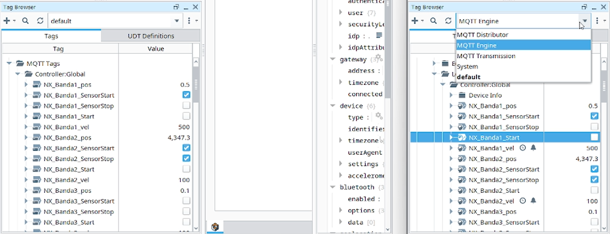
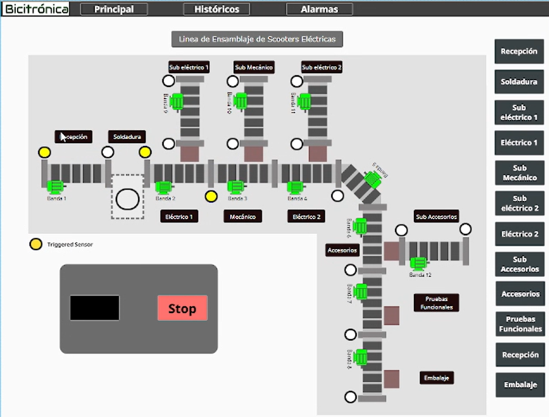

Esta arquitectura de comunicación ha sido concebida y estructurada con el propósito fundamental de establecer una integración robusta, escalable y segura a través de los diversos niveles operativos de una fábrica digital. El objetivo primordial es facilitar la toma de decisiones informada por datos y la optimización continua de los procesos, desde el control de planta hasta las capacidades de la computación en la nube. A continuación, se detallan los componentes y la justificación de cada elección dentro de esta arquitectura:
Justificación General y Beneficios de la Arquitectura:

En Azure, un contenedor es una instancia ligera y aislada que ejecuta una aplicación y sus dependencias. En este caso, se está usando un contenedor para desplegar el servidor Ignition, lo que permite montar un sistema SCADA en la nube sin necesidad de infraestructura física.
Ventajas clave:
Este enfoque es ideal para una planta conectada, ya que facilita la supervisión remota, la integración con IoT y la implementación de manufactura flexible.


Esta interfaz SCADA ha sido diseñada para proporcionar una supervisión, control y análisis completos de la "Línea de Ensamblaje de Scooters Eléctricas" dentro de una fábrica. Su estructura modular y su diseño intuitivo buscan maximizar la eficiencia operativa y la capacidad de respuesta ante cualquier evento en la producción.